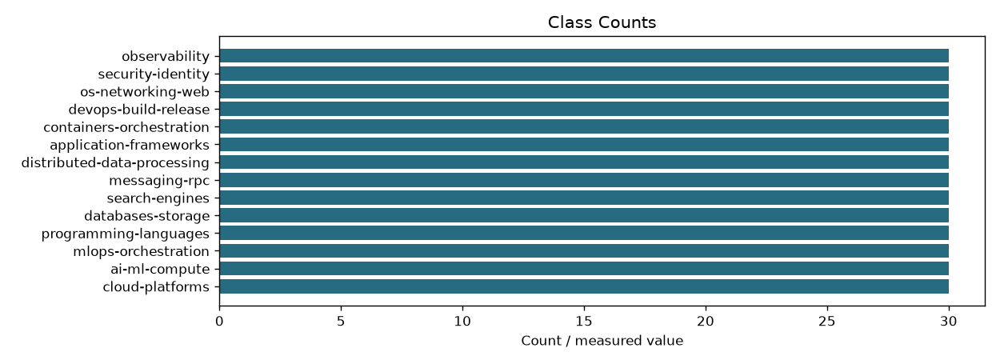
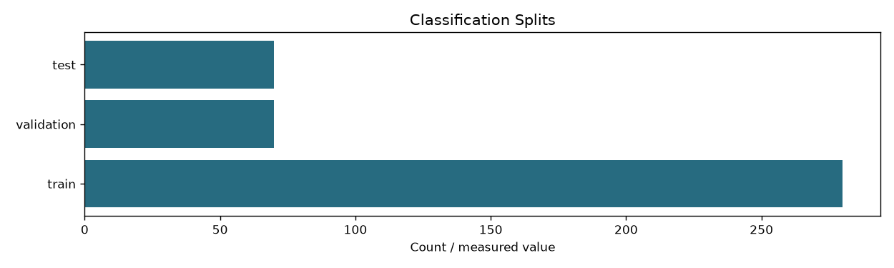
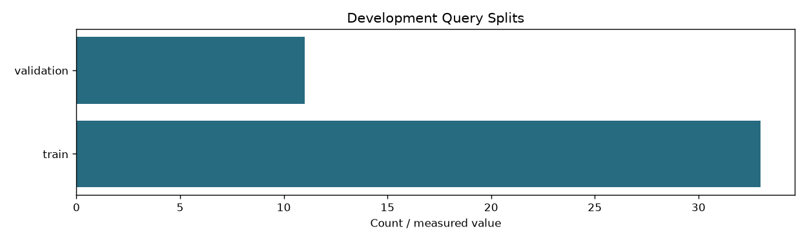

| checks_passed | True |
|---|---|
| zone_pairs | 262 |
| usable_zone_pairs | 262 |
| development_queries | 44 |
| query_splits | {'train': 33, 'validation': 11} |
| classification_documents | 420 |
| classes | 14 |
| classification_splits | {'train': 280, 'validation': 70, 'test': 70} |
| query_scope | Learning queries only; final benchmark queries live on the evaluation branch |
| source_text_and_label_mapping_checked | True |
| classification_duplicate_group_leakage | False |
| semantic_label_scope | Binary query-specific development relevance; classification labels describe source domains. Structural checks do not prove judgment correctness. |
| zone_training_sha256 | e7bfe4179874a20cb35762d3acb723e9172f4dbc8f08da4293e590f5b85341fc |
| classification_training_sha256 | e9ff13c8df76535b2838baa4139264dfe1abd5a37583331bbba731a2409203bf |


